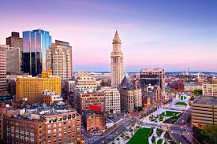

Choses à découvrir à Boston
- Freedom Trail – Parcours historique retraçant la révolution américaine.
- Harvard University – Université mythique située à Cambridge.
- MIT – Institut technologique de renommée mondiale.
- Boston Common – Le plus ancien parc public des États-Unis.
- Faneuil Hall Marketplace – Boutiques, restaurants et animations de rue.
- Quincy Market – Dégustez les spécialités locales comme la clam chowder.
- Fenway Park – Stade emblématique des Red Sox.
- Beacon Hill – Quartier pittoresque aux rues pavées et maisons en briques rouges.
- Boston Tea Party Ships & Museum – Revivez un événement clé de l’histoire américaine.
- New England Aquarium – Découvrez la faune marine de l’Atlantique.
- North End – Quartier italien célèbre pour ses restaurants authentiques.
- Seaport District – Quartier moderne avec vues sur le port et restaurants tendance.
- Isabella Stewart Gardner Museum – Musée unique dans un palais inspiré de Venise.
- Charles River Esplanade – Promenade agréable le long de la rivière Charles.
- Croisière dans le port de Boston – Admirez la skyline depuis l’eau.